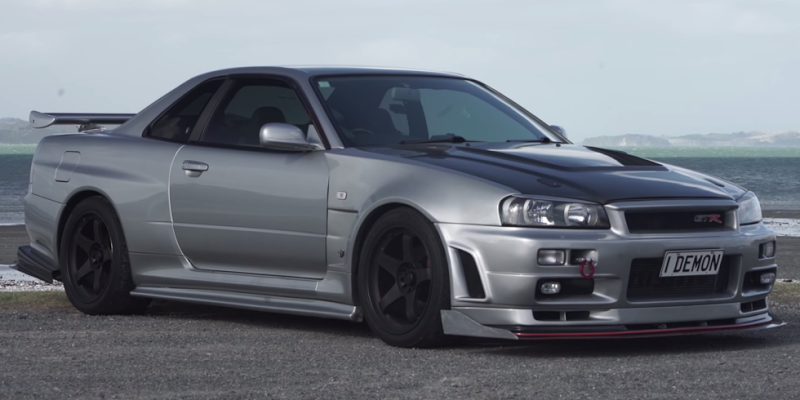

Nissan skyline r34


The nissan skyline r34 was first realeased in May 1998, the EN34, HR34, ER34 and BNR34 the more fuel-efficient and environmentally friendly rb25det neo engine. They were the only two countries besides Japan that sold the R34 model Skylines new. it was sold in New Zealand and Hong Kong from 1997 to 2000.All Japanese Nissan Prince Store locations that sold the Skyline were renamed Nissan Red Stage.